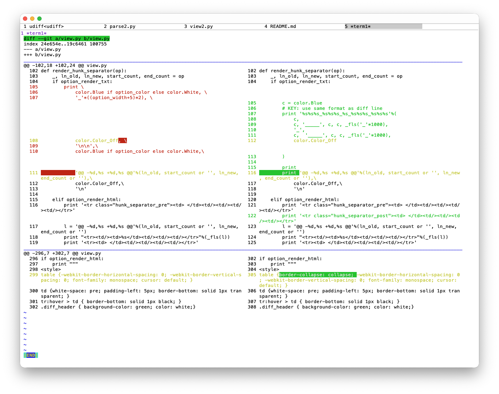
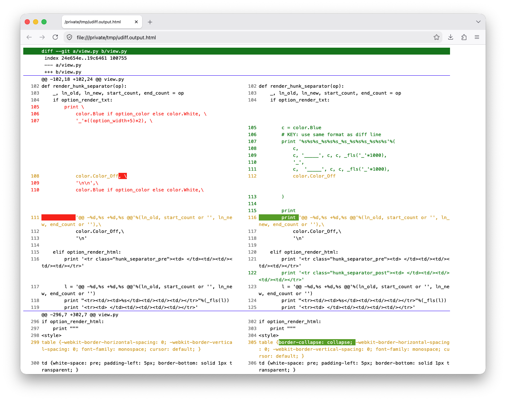

$ ./udiff 36531bd f8e784f
$ ENV_HTML=1 ./udiff 36531bd f8e784f > /tmp/udiff.output.html; open /tmp/udiff.output.html$ ./udiff# load udiff.source file in your ~/.bashrc
source {YOUR_UDIFF_DIRPATH}/udiff.sourceThen, you can use d directly, and D to
export html
$ d
$ D # export as html$ git log
COMMIT_ID_C hello
COMMIT_ID_B some modify here
COMMIT_ID_A init
$ udiff COMMIT_ID_A COMMIT_ID_B
$ ENV_HTML=1 udiff COMMIT_ID_A COMMIT_ID_BCheck out ./example